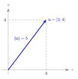
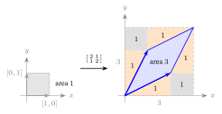
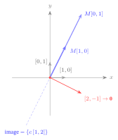
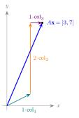
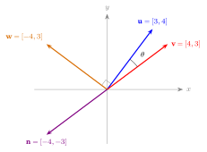
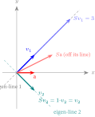
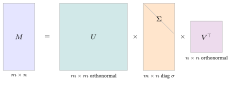
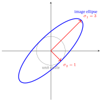

Linear Algebra for ML
1. Vectors
A vector is an ordered list of numbers. We write it as a column:
\[ \mathbf{u} = \begin{bmatrix} 3 \\ 4 \end{bmatrix}, \qquad \mathbf{x} = \begin{bmatrix} 1 \\ 2 \\ 1 \end{bmatrix}. \]
The numbers are its components (or entries, or coordinates); how many there are is the vector’s dimension (\(\mathbf{u}\) is 2-dimensional, \(\mathbf{x}\) is 3-dimensional). The set of all \(d\)-dimensional real vectors is written \(\mathbb{R}^{d}\).
Why “vector”. From Latin vehere, “to carry” (same root as vehicle). A vector carries you from the origin to a point — it is naturally pictured as an arrow from \((0,0)\) to the point whose coordinates are its entries. That arrow picture is the whole reason linear algebra is geometric, not just bookkeeping.
Two readings, one object. A vector is both a list of numbers (a data record: a movie’s \(d\) learned features; a user’s \(d\) tastes) and an arrow in \(d\)-dimensional space. In machine learning these features are called an embedding — a learned vector that places each user or item as a point in space (this is exactly the embedding of From Graphs to LightGCN).
Length (norm). The length of a vector — its norm, written \(\lVert\mathbf{u}\rVert\) — is how long the arrow is, by the Pythagorean theorem:
\[ \lVert \mathbf{u}\rVert \;=\; \sqrt{\,u_1^2 + u_2^2 + \cdots + u_d^2\,} \;=\;\underbrace{\sqrt{\textstyle\sum_i u_i^2}}_{\text{root of the sum of squared entries}} . \]
For \(\mathbf{u}=[3,4]\): \(\lVert\mathbf{u}\rVert=\sqrt{3^2+4^2}=\sqrt{25}=5\). (Per component: squaring makes every entry positive and weights big ones more; the \(\sum\) pools them into one number; the outer \(\sqrt{\cdot}\) undoes the squaring so the length is back in the vector’s own units — here exactly the hypotenuse \(5\).) A vector of length \(1\) is called a unit vector; dividing a vector by its own length (“normalizing”) makes it a unit vector pointing the same way.
This is the L2 (Euclidean) norm, the everyday “length.” It is one of a family: the \(L_p\) norm \(\lVert\mathbf{u}\rVert_p=\big(\sum_i |u_i|^p\big)^{1/p}\) raises each absolute entry to the power \(p\), sums, then takes the \(p\)-th root. Two cases recur in ML — \(p=2\) is this Euclidean length, and \(p=1\) is the L1 (Manhattan / taxicab) norm \(\lVert\mathbf{u}\rVert_1=\sum_i|u_i|\) (for \([3,4]\) that is \(3+4=7\), the city-block distance). Losses & Regularizers uses both: L2 for ridge / weight decay, L1 for lasso / sparsity.
Why “norm”. From Latin norma — a carpenter’s square, hence a standard or rule. A norm is the agreed standard for “how big” a vector is, and to normalize is to rescale it to the standard unit length \(1\). (Same root as normal = “conforming to the standard”; in geometry a normal direction is the perpendicular one that such a square marks off. The notation \(\lVert\cdot\rVert\) uses double bars to distinguish a vector’s norm from a number’s absolute value \(|\cdot|\).)
Intuition. Keep both pictures in your head. The list tells you how to compute; the arrow tells you what the computation means (longer = bigger, same direction = similar). Every operation below is just arithmetic on the lists that does something to the arrows.

2. Matrices
A matrix is a rectangular grid of numbers, with rows (running left–right) and columns (running top–bottom). A matrix with \(m\) rows and \(n\) columns is called an \(m\times n\) (“\(m\)-by-\(n\)”) matrix; \(m\times n\) is its shape. The entry in row \(i\), column \(j\) is written \(A_{ij}\).
\[ A = \begin{bmatrix} 2 & 0 & 1 \\ 1 & 3 & 0 \end{bmatrix} \quad(\text{shape } 2\times 3:\ \ A_{11}=2,\ A_{23}=0). \]
Why “matrix”. Latin for womb / source (from mater, “mother”). The mathematician J. J. Sylvester coined the term in 1850 for an array out of which sub-determinants are born — the grid is the “mother” the smaller objects come from.
Three ways to read one matrix — all describe the same grid, and each is useful later:
| Reading | What you see | Used in |
|---|---|---|
| A table of numbers | a spreadsheet: e.g. row \(i\) = user, column \(j\) = movie, entry = rating | the interaction matrix (From Graphs to LightGCN) |
| A stack of row vectors / columns | each row is a vector; each column is a vector | embedding matrix = a stack of per-item vectors (From Graphs to LightGCN) |
| A function | a rule that transforms a vector into another vector | propagation, filtering (From Graphs to LightGCN and The Spectral / Graph-Filter View) |
The third reading is the deep one: a matrix is a linear transformation. Feeding a vector in (next section) is how the matrix acts.
Two special matrices. The identity matrix \(I\) (Latin idem, “the same” — it hands every vector back unchanged, \(I\mathbf{x}=\mathbf{x}\), the matrix analog of the number \(1\)) has \(1\)s on the diagonal (Greek dia- “across” + gōnia “corner”: the corner-to-corner line) and \(0\)s elsewhere. A matrix is symmetric if it equals its own mirror across the diagonal (\(A_{ij}=A_{ji}\)); the transpose \(A^{\top}\) (Latin trans- “across” + ponere “to place” — each entry placed across the diagonal) is that mirror (swap rows and columns), so symmetric means \(A=A^{\top}\). Symmetry matters in §5: symmetric matrices have especially clean eigenvectors.
The determinant — does the transform collapse space?
Read \(A\) as a transformation (third reading above). Its determinant \(\det(A)\) is the factor by which it scales area/volume, with the sign flagging a flip. For a \(2\times2\) matrix it is
\[ \det\begin{bmatrix}a&b\\c&d\end{bmatrix}=ad-bc. \]
Per component: the two columns \([a,c]\) and \([b,d]\) are the edges of a parallelogram; \(ad\) is the area it would span if those edges were axis-aligned, and \(bc\) is the shear you subtract once they tilt — so \(ad-bc\) is the signed area of the parallelogram the columns make. Zero area means the two columns collapsed onto one line (a killed dimension).
- \(\det\!\begin{bmatrix}2&1\\1&2\end{bmatrix}=2\cdot2-1\cdot1=\mathbf{3}\) — areas are tripled.
- \(\det\!\begin{bmatrix}1&2\\2&4\end{bmatrix}=1\cdot4-2\cdot2=\mathbf{0}\) — zero: the transform squashes the whole plane onto a line (it kills a dimension). A zero determinant is the danger sign.
We will follow these two running matrices through §2, §5, and §6: the healthy \(S=\left[\begin{smallmatrix}2&1\\1&2\end{smallmatrix}\right]\) (det \(3\), full rank, invertible — the eigenvalue and ellipse example) and the collapsed \(M=\left[\begin{smallmatrix}1&2\\2&4\end{smallmatrix}\right]\) (det \(0\), rank \(1\), singular — the SVD example). Tracking the same two objects beats meeting fresh numbers each section.
Why “determinant”. It determines whether the matrix can be undone (next two subsections) and whether a system \(A\mathbf{x}=\mathbf{b}\) has a unique solution. (\(3\times3\) and larger use a longer cofactor-expansion formula; the meaning — volume scaling, zero = collapse — is what the book needs.)
Rank — how many independent directions?
The rank is the number of linearly independent rows (equivalently, columns) — how many genuinely different directions the matrix’s output can reach. (A set of vectors is linearly independent when no one of them can be written as a weighted sum of the others — each points in a direction the rest cannot reach together.)
- \(\begin{bmatrix}2&1\\1&2\end{bmatrix}\) has rank 2: neither row is a multiple of the other (two independent directions → “full rank”).
- \(\begin{bmatrix}1&2\\2&4\end{bmatrix}\) has rank 1: row \(2 = 2\times\) row \(1\), so both rows lie on one line (this is the matrix the SVD decomposes in §6).
A square \(n\times n\) matrix with rank \(n\) is full rank; rank \(<n\) is rank-deficient.
Invertibility — can the transform be undone?
A square matrix \(A\) is invertible (or nonsingular) if some inverse \(A^{-1}\) undoes it: \(A^{-1}A=AA^{-1}=I\). For a \(2\times2\),
\[ A^{-1}=\frac{1}{\det A}\begin{bmatrix}d&-b\\-c&a\end{bmatrix}\qquad(\text{exists only when }\det A\neq0). \]
Per component: swap the diagonal (\(a\leftrightarrow d\)), negate the off-diagonal (\(b,c\)), then divide every entry by \(\det A\) — that rescaling is exactly what makes \(A^{-1}A\) land on \(I\), and it divides by zero (no inverse) precisely when \(\det A=0\).
For \(A=\begin{bmatrix}2&1\\1&2\end{bmatrix}\) (\(\det=3\)): \(A^{-1}=\tfrac{1}{3}\begin{bmatrix}2&-1\\-1&2\end{bmatrix}=\begin{bmatrix}0.667&-0.333\\-0.333&0.667\end{bmatrix}\), and indeed \(AA^{-1}=I\). But \(\begin{bmatrix}1&2\\2&4\end{bmatrix}\) has \(\det=0\), so no inverse exists — once the plane is flattened onto a line you cannot recover which point you came from.
The one fact that ties §2 together. For a square matrix these are the same condition: \[\det A\neq 0 \;\Longleftrightarrow\; \text{full rank} \;\Longleftrightarrow\; \text{invertible} \;\Longleftrightarrow\; \text{no eigenvalue (§5) or singular value (§6) is }0.\] A matrix that fails them is singular (the word §6 traces). Why “invertible”: the transform can be inverted — run backwards.
Watch the collapse (a rank-1 matrix, by hand). Take \(A=\begin{bmatrix}1&2\\2&4\end{bmatrix}\) (rank \(1\), \(\det=0\)) and read where it sends the two unit axes: \(A[1,0]=[1,2]\) and \(A[0,1]=[2,4]=2[1,2]\). Both land on the single line through \([1,2]\) — and so does every output, because both columns are multiples of \([1,2]\) (e.g. \(A[1,1]=[3,6]=3[1,2]\)). The whole plane is squashed onto one line, the column space. Two consequences fall out, and both are the meaning of “\(\det=0\)”:
- A direction is destroyed. \(A[2,-1]=[0,0]\): the input \([2,-1]\) is mapped to the origin. That killed direction is the null space — the dimension the transform throws away.
- It cannot be undone. \(A[3,-1]=[1,2]=A[1,0]\): two different inputs give the same output, so there is no inverse — once flattened onto the line, \([1,0]\) and \([3,-1]\) are indistinguishable.
A full-rank map keeps the plane a plane; a rank-deficient one loses a dimension. That lost dimension is exactly the zero singular value the SVD exposes in §6, and the same collapse that over-smoothing inflicts on graph embeddings (From Graphs to LightGCN §12).

3. The matrix–vector product
This is the operation. Almost everything in the book — a propagation layer, a graph filter, a linear scoring head — is “multiply by a matrix.”
The rule. To multiply matrix \(A\) (shape \(m\times n\)) by vector \(\mathbf{x}\) (dimension \(n\)), take the dot product (§4) of each row of \(A\) with \(\mathbf{x}\). The result is a new vector of dimension \(m\) — one entry per row:
\[ (A\mathbf{x})_i \;=\; \underbrace{\sum_{j=1}^{n} A_{ij}\,x_j}_{\text{row }i\text{ of }A\text{ dotted with }\mathbf{x}} . \]
The inner dimensions must match: an \(m\times n\) matrix eats an \(n\)-vector and emits an \(m\)-vector (“\(n\) in, \(m\) out”). If they don’t match, the product is undefined.
Worked by hand. With \(A=\begin{bmatrix}2&0&1\\[2pt]1&3&0\end{bmatrix}\) and \(\mathbf{x}=\begin{bmatrix}1\\2\\1\end{bmatrix}\):
\[ A\mathbf{x}= \begin{bmatrix} 2\cdot 1 + 0\cdot 2 + 1\cdot 1\\[2pt] 1\cdot 1 + 3\cdot 2 + 0\cdot 1 \end{bmatrix} = \begin{bmatrix} 2+0+1\\ 1+6+0 \end{bmatrix} = \begin{bmatrix} 3\\ 7 \end{bmatrix}. \quad✓ \]
- Row 1 \([2,0,1]\) dotted with \([1,2,1]\): \(2+0+1=3\). ✓
- Row 2 \([1,3,0]\) dotted with \([1,2,1]\): \(1+6+0=7\). ✓
A \(2\times 3\) matrix turned a 3-vector into a 2-vector — exactly “3 in, 2 out.”
Intuition. Two complementary pictures of the same product: (a) per-output: each output entry asks one row “how much do you agree with \(\mathbf{x}\)?” (a dot product, §4). (b) per-input: \(A\mathbf{x}\) is a weighted blend of \(A\)’s columns, the weights being \(\mathbf{x}\)’s entries — \(A\mathbf{x}=1\!\cdot\!\text{col}_1 +2\!\cdot\!\text{col}_2+1\!\cdot\!\text{col}_3\). That second picture — “a matrix mixes its columns” — is precisely what a graph-propagation layer does: mix each node’s vector with its neighbours’.

Matrix times matrix is the same rule applied column by column: \(AB\)’s \(j\)-th column is \(A\) times \(B\)’s \(j\)-th column. Worked once, with \(A=\begin{bmatrix}1&2\\3&4\end{bmatrix}\) and the column-swap \(B=\begin{bmatrix}0&1\\1&0\end{bmatrix}\):
\[ AB=\begin{bmatrix}1&2\\3&4\end{bmatrix}\!\begin{bmatrix}0&1\\1&0\end{bmatrix}=\begin{bmatrix}2&1\\4&3\end{bmatrix}, \qquad BA=\begin{bmatrix}0&1\\1&0\end{bmatrix}\!\begin{bmatrix}1&2\\3&4\end{bmatrix}=\begin{bmatrix}3&4\\1&2\end{bmatrix}. \]
\(AB\) swapped \(A\)’s columns, \(BA\) swapped its rows — so order matters: \(AB\ne BA\) in general. (You use this exact rule once more in §6, to form \(M^{\top}M\).)
4. The dot product and cosine similarity
The dot product (also inner product or scalar product) of two same-dimension vectors multiplies them entry-by-entry and sums:
\[ \mathbf{u}\cdot\mathbf{v} \;=\; \sum_{i=1}^{d} u_i v_i \;=\; u_1v_1 + u_2v_2 + \cdots + u_dv_d . \]
It returns a single number (a scalar — Latin scala, “ladder/scale”: a pure magnitude that scales a vector, with no direction of its own), not a vector — hence “scalar product.” A clean geometric fact ties it to angle and length:
\[ \mathbf{u}\cdot\mathbf{v} \;=\; \underbrace{\lVert\mathbf{u}\rVert}_{\text{length of }\mathbf{u}}\, \underbrace{\lVert\mathbf{v}\rVert}_{\text{length of }\mathbf{v}}\, \underbrace{\cos\theta}_{\substack{\text{cosine of the}\\\text{angle between them}}} . \]
So the dot product is large and positive when two vectors point the same way, zero when they are perpendicular, negative when they oppose. Perpendicular vectors (dot product \(0\)) are called orthogonal (Greek orthos “right/straight” + gōnia “angle” — literally “right-angled,” the same orthos as in orthodontics); the word returns in §5 and §6.
Cosine similarity (cosine = “complement’s sine” — the sine of the complementary angle \(90^\circ-\theta\)). Divide out the two lengths and you are left with just \(\cos\theta\), which lives in \([-1,1]\) and ignores magnitude — pure direction agreement:
\[ \cos\theta \;=\; \frac{\mathbf{u}\cdot\mathbf{v}}{\lVert\mathbf{u}\rVert\,\lVert\mathbf{v}\rVert}. \]
This is cosine similarity: \(+1\) = same direction, \(0\) = orthogonal, \(-1\) = opposite. It is the standard “how alike are these two embeddings?” measure (and the alignment term in SSL & Contrastive Learning is exactly this on normalized vectors).
Worked by hand. Take \(\mathbf{u}=[3,4]\) and \(\mathbf{v}=[4,3]\).
- Dot product: \(\mathbf{u}\cdot\mathbf{v}=3\cdot4+4\cdot3=12+12=24\).
- Lengths: \(\lVert\mathbf{u}\rVert=\sqrt{9+16}=5\), \(\lVert\mathbf{v}\rVert=\sqrt{16+9}=5\).
- Cosine: \(\dfrac{24}{5\cdot5}=\dfrac{24}{25}=0.96\). ✓ (an angle of about \(16.3^{\circ}\) — nearly the same direction, as the near-\(1\) value says).
The contrast that teaches it. Now take \(\mathbf{w}=[-4,3]\) against the same \(\mathbf{u}=[3,4]\):
- Dot product: \(\mathbf{u}\cdot\mathbf{w}=3(-4)+4(3)=-12+12=0\).
- Cosine: \(0/(5\cdot5)=0\) — orthogonal, a right angle, no agreement. ✓
| pair | dot product | cosine | reading |
|---|---|---|---|
| \(\mathbf{u}=[3,4],\ \mathbf{v}=[4,3]\) | \(24\) | \(0.96\) | almost the same direction |
| \(\mathbf{u}=[3,4],\ \mathbf{w}=[-4,3]\) | \(0\) | \(0\) | perpendicular — unrelated |

The recommender’s scoring rule. In From Graphs to LightGCN a user \(\mathbf{p}\) and an item \(\mathbf{q}\) are each a vector; the predicted affinity is \(\mathbf{p}\cdot\mathbf{q}\) — high when their directions agree. That single dot product is the entire scoring head of a matrix-factorization or LightGCN recommender. Cosine is its length-normalized cousin.
One sentence: the dot product turns “do these two vectors agree?” into a single number, and dividing by their lengths (cosine) keeps only the direction.
Cousins: Euclidean distance, and a serving trick
Two more scoring rules complete the picture. Euclidean distance \(\lVert\mathbf{u}-\mathbf{v}\rVert\) is the straight-line gap between the two arrow-tips — subtract, then take the L2 norm (§1). For \(\mathbf{u}=[3,4]\) and \(\mathbf{v}=[4,3]\): \(\mathbf{u}-\mathbf{v}=[-1,1]\), so distance \(=\sqrt{2}\approx1.41\); for the perpendicular \(\mathbf{w}=[-4,3]\): \(\mathbf{u}-\mathbf{w}=[7,1]\), distance \(=\sqrt{50}\approx7.07\).
| measure | \(\mathbf{u},\mathbf{v}\) | \(\mathbf{u},\mathbf{w}\) | feels length? |
|---|---|---|---|
| dot product | \(24\) | \(0\) | yes |
| cosine | \(0.96\) | \(0\) | no |
| Euclidean distance | \(1.41\) | \(7.07\) | yes |
Which to use? Cosine when only direction (a taste profile) matters and vector length is an artifact; distance when magnitude is meaningful; the raw dot product when you want both — and it is the cheapest, which is why recommenders score with it.
A serving trick (practitioner). L2-normalize every embedding once (divide by its length, §1) and the dot product becomes the cosine — so cosine ranking turns into plain inner-product search, which fast vector indexes do in milliseconds. The flip side: on un-normalized vectors the dot product is length-sensitive, so a few big-norm “popular” items can dominate the ranking — a bias to watch for.
Projection: a coordinate is a dot product
Projecting \(\mathbf{u}\) onto \(\mathbf{v}\) asks how much of \(\mathbf{u}\) lies along \(\mathbf{v}\)’s direction — geometrically, the shadow \(\mathbf{u}\) casts on \(\mathbf{v}\)’s line:
\[ \mathrm{proj}_{\mathbf{v}}\mathbf{u} \;=\; \underbrace{\frac{\mathbf{u}\cdot\mathbf{v}}{\lVert\mathbf{v}\rVert^{2}}}_{\text{how many }\mathbf{v}\text{'s}}\;\mathbf{v}. \]
Per component: the dot product measures the overlap; dividing by \(\lVert\mathbf{v}\rVert^{2}\) turns it into “how many copies of \(\mathbf{v}\)”; multiplying by \(\mathbf{v}\) lays that many copies along the line. Worked: project \(\mathbf{u}=[3,4]\) onto the \(x\)-axis \(\mathbf{v}=[1,0]\): \(\frac{3}{1}[1,0]=[3,0]\) — exactly \(\mathbf{u}\)’s \(x\)-component, its shadow on the floor.
Why it matters downstream. When the \(\mathbf{v}\)’s form an orthonormal basis (unit-length and mutually perpendicular — §6’s \(U,V\)), every \(\lVert\mathbf{v}\rVert^{2}=1\), so each projection is just a dot product and a vector’s coordinates are a list of them: \(\mathbf{u}=\sum_i(\mathbf{u}\cdot\mathbf{e}_i)\,\mathbf{e}_i\). That is precisely what The Spectral / Graph-Filter View’s Graph Fourier Transform does — project a signal onto the graph’s eigenvectors to read its frequency coordinates.
Why “orthonormal”. A blend of orthogonal (perpendicular, above) + normal (unit length, §1’s normalize): an orthonormal basis is a full set of directions that are mutually perpendicular and each of length \(1\) — a clean, rotated set of axes.
A tiny orthonormal basis (worked). Rotate the standard axes by \(45^\circ\) to get \(\mathbf{e}_1=\tfrac{1}{\sqrt2}[1,1]\approx[0.707,0.707]\) and \(\mathbf{e}_2=\tfrac{1}{\sqrt2}[-1,1]\approx[-0.707,0.707]\) — exactly §5’s two eigenvectors of \(S\), scaled to length \(1\). Check the two defining properties: each is a unit vector, \(\lVert\mathbf{e}_1\rVert=\sqrt{0.5+0.5}=1\) (same for \(\mathbf{e}_2\)), and they are orthogonal, \(\mathbf{e}_1\cdot\mathbf{e}_2=\tfrac12(-1+1)=0\). ✓ Now read \(\mathbf{u}=[3,4]\) in this frame — each coordinate is one dot product:
\[ c_1=\mathbf{u}\cdot\mathbf{e}_1=\tfrac{3+4}{\sqrt2}=\tfrac{7}{\sqrt2}\approx4.95,\qquad c_2=\mathbf{u}\cdot\mathbf{e}_2=\tfrac{-3+4}{\sqrt2}=\tfrac{1}{\sqrt2}\approx0.707, \]
and rebuilding from those coordinates returns \(\mathbf{u}\) exactly: \(c_1\mathbf{e}_1+c_2\mathbf{e}_2=\tfrac{7}{\sqrt2}\!\cdot\!\tfrac{1}{\sqrt2}[1,1]+\tfrac{1}{\sqrt2}\!\cdot\!\tfrac{1}{\sqrt2}[-1,1]=\tfrac72[1,1]+\tfrac12[-1,1]=[3,4]\). ✓ That round-trip — project onto each basis vector, then add the pieces back — is the whole mechanism §6’s \(U,V\) and the Graph Fourier Transform run on.

5. Eigenvalues and eigenvectors
Read a matrix \(A\) as a function (§2): it sends each vector \(\mathbf{v}\) to a new vector \(A\mathbf{v}\). Usually that rotates and stretches the arrow. But a few special directions are only stretched, never rotated — \(A\mathbf{v}\) lands on the same line as \(\mathbf{v}\):
\[ A\,\mathbf{v} \;=\; \underbrace{\lambda}_{\substack{\text{eigenvalue:}\\\text{stretch factor}}}\;\underbrace{\mathbf{v}}_{\substack{\text{eigenvector:}\\\text{the unmoved direction}}} . \]
Such a \(\mathbf{v}\) (nonzero) is an eigenvector of \(A\); the number \(\lambda\) telling how much it is stretched is the matching eigenvalue. \(\lambda>1\) stretches, \(0<\lambda<1\) shrinks, \(\lambda<0\) flips, \(\lambda=1\) leaves it fixed.
Why “eigen”. German eigen = “own / characteristic / proper.” An eigenvector is a direction the matrix treats as its own — it points the result straight back out along the input. (Older English texts even say characteristic vector.) The name is the mnemonic: eigen = the matrix’s own axes.
Why they matter. For a symmetric matrix (§2) the eigenvectors are mutually orthogonal (§4) and form a complete set of perpendicular axes — an eigenbasis. In those axes the matrix is trivial: it just scales each axis by its \(\lambda\). So any action of a symmetric matrix is “rotate into its eigen-axes, scale each, rotate back.” This is the engine under The Spectral / Graph-Filter View: a graph’s eigenvectors are its frequency patterns, and filtering = reweighting each eigenvector by a function of its \(\lambda\).
Worked by hand. Take the symmetric matrix \(S=\begin{bmatrix}2&1\\[2pt]1&2\end{bmatrix}\). Two directions are clean to test (using \(\tfrac{1}{\sqrt2}\approx0.707\)):
Direction \(\mathbf{v}_1=[1,1]\) (scaled to unit length \([0.707,0.707]\)):
\[ S\begin{bmatrix}1\\1\end{bmatrix} =\begin{bmatrix}2\cdot1+1\cdot1\\ 1\cdot1+2\cdot1\end{bmatrix} =\begin{bmatrix}3\\3\end{bmatrix} =3\begin{bmatrix}1\\1\end{bmatrix}\;\Rightarrow\;\lambda_1=3. \quad✓ \]
Direction \(\mathbf{v}_2=[1,-1]\) (unit \([0.707,-0.707]\)):
\[ S\begin{bmatrix}1\\-1\end{bmatrix} =\begin{bmatrix}2\cdot1+1(-1)\\ 1\cdot1+2(-1)\end{bmatrix} =\begin{bmatrix}1\\-1\end{bmatrix} =1\begin{bmatrix}1\\-1\end{bmatrix}\;\Rightarrow\;\lambda_2=1. \quad✓ \]
| eigenvector (unit) | eigenvalue \(\lambda\) | what \(S\) does to it |
|---|---|---|
| \([0.707,\;0.707]\) (the “both agree” axis) | \(3\) | stretches \(\times 3\) |
| \([0.707,\;-0.707]\) (the “they differ” axis) | \(1\) | leaves it unchanged |
And the two eigenvectors are orthogonal: \([1,1]\cdot[1,-1]=1-1=0\) ✓ — perpendicular axes, exactly as the symmetric case promises. Notice the eigenvalues, \(3\) and \(1\), sum to \(4\) = the diagonal sum \(2+2\) of \(S\) (a handy hand-check called the trace).

Cross-reference, not duplication. The Spectral / Graph-Filter View puts these eigenvectors to work as a graph’s frequencies and reads \(\lambda\) as a frequency label — high \(\lambda\) = smooth pattern, low/negative \(\lambda\) = jagged. The eigen machinery is defined here; The Spectral / Graph-Filter View uses it. Go there for the graph-signal meaning.
How to find them — the characteristic equation. You don’t have to guess the directions. An eigenvector obeys \(A\mathbf{v}=\lambda\mathbf{v}\), i.e. \((A-\lambda I)\mathbf{v}=\mathbf{0}\) with \(\mathbf{v}\neq\mathbf{0}\). We need \(A-\lambda I\) to send a nonzero \(\mathbf{v}\) to \(\mathbf{0}\) — i.e. to be singular — and (§2) a matrix is singular exactly when its determinant is \(0\), so \(\det(A-\lambda I)=0\). That gives the recipe:
- Eigenvalues: solve the characteristic equation \(\det(A-\lambda I)=0\) for \(\lambda\).
- Eigenvectors: for each \(\lambda\), solve \((A-\lambda I)\mathbf{v}=\mathbf{0}\).
Worked on \(S=\begin{bmatrix}2&1\\1&2\end{bmatrix}\). Step 1 — the determinant (§2) of \(S-\lambda I\):
\[ \det\begin{bmatrix}2-\lambda&1\\1&2-\lambda\end{bmatrix}=(2-\lambda)^2-1=\lambda^2-4\lambda+3=(\lambda-1)(\lambda-3)=0 \;\Rightarrow\;\lambda=1,\ 3, \]
exactly the two stretch factors we tested above. Step 2 — for \(\lambda=3\), \(S-3I=\begin{bmatrix}-1&1\\1&-1\end{bmatrix}\), whose equation \(-v_1+v_2=0\) forces \(v_1=v_2\) → \(\mathbf{v}=[1,1]\); for \(\lambda=1\), \(S-I=\begin{bmatrix}1&1\\1&1\end{bmatrix}\) forces \(v_2=-v_1\) → \(\mathbf{v}=[1,-1]\) (the same two axes as the table). Because each \(A-\lambda I\) is singular (what \(\det=0\) bought us), its one independent equation pins down only a direction — the whole line \(\{c\,\mathbf{v}\}\) of multiples solves it — so we report the unit-length representative. The characteristic polynomial has degree \(n\) for an \(n\times n\) matrix, so there are \(n\) eigenvalues (counting repeats; for non-symmetric matrices some may be complex). That polynomial route is the definition; the book mostly uses the resulting (stretched-only direction) intuition.
6. The singular value decomposition (SVD)
Eigenvectors (§5) need a square matrix, and behave cleanest when it is symmetric. Most data matrices are rectangular (users \(\times\) movies) and not symmetric. The singular value decomposition (SVD) is the universal replacement: every matrix — any shape, any contents — factors as
\[ M \;=\; \underbrace{U}_{\substack{\text{left patterns}\\(\text{output directions})}}\; \underbrace{\Sigma}_{\substack{\text{strengths }\sigma_i\ge 0\\(\text{diagonal})}}\; \underbrace{V^{\top}}_{\substack{\text{right patterns}\\(\text{input directions})}} . \]
- \(U\) and \(V\) hold orthonormal patterns (unit-length, mutually orthogonal — §4): the output-side and input-side directions.
- \(\Sigma\) is diagonal, holding the singular values \(\sigma_1\ge\sigma_2\ge\cdots\ge0\), the strength of each pattern. A big \(\sigma\) = a direction the matrix amplifies a lot.

Equivalently, \(M\) is a sum of rank-1 pieces, biggest first: \(M=\sigma_1\,\mathbf{u}_1\mathbf{v}_1^{\top}+\sigma_2\,\mathbf{u}_2\mathbf{v}_2^{\top}+\cdots\), where \(\mathbf{u}_i\mathbf{v}_i^{\top}\) is the outer product (a column times a row = a whole matrix — e.g. \(\begin{bmatrix}1\\2\end{bmatrix}[1\ \ 2]=\begin{bmatrix}1&2\\2&4\end{bmatrix}\), entry \((i,j)\) being simply \(u_iv_j\)). Keeping only the top few terms is truncated SVD — the best low-rank approximation in the least-squares (Frobenius) sense (the Frobenius norm is just the L2 norm of a matrix flattened into one long vector, \(\sqrt{\sum_{ij}M_{ij}^2}\) — after Ferdinand Frobenius), the Eckart–Young theorem (Carl Eckart & Gale Young, who proved it for factor analysis in Psychometrika, 1936) — and the basis of the SVD recommenders in The Spectral / Graph-Filter View.
Why “singular”. From the older theory of matrices, where a non-invertible matrix was called singular; the SVD’s smallest singular values say exactly how close a matrix is to that singular (degenerate) state. A \(\sigma_i=0\) is a direction the matrix collapses to nothing.

Worked by hand. Take the (deliberately rank-1) matrix \(M=\begin{bmatrix}1&2\\[2pt]2&4\end{bmatrix}\) — the rank-1 matrix from §2 (row 2 is exactly \(2\times\) row 1, so the rows point the same way); one direction should carry everything.
Find the strengths from \(M^{\top}M\) (a symmetric matrix, so §5 applies):
\[ M^{\top}M=\begin{bmatrix}1&2\\2&4\end{bmatrix}\!\begin{bmatrix}1&2\\2&4\end{bmatrix} =\begin{bmatrix}5&10\\10&20\end{bmatrix}, \qquad \text{eigenvalues } 25 \text{ and } 0 . \]
For a \(2\times2\) matrix the eigenvalues sum to the trace and multiply to the determinant (§5, §2): here \(\operatorname{tr}=5+20=25=25+0\) ✓ and \(\det=5\cdot20-10\cdot10=100-100=0=25\cdot0\) ✓, so \(\lambda=25,\,0\) with no further calculation.
The singular values are the square roots of those eigenvalues: \(\sigma_1=\sqrt{25}=5\) and \(\sigma_2=\sqrt{0}=0\). So the SVD has one nonzero piece. Its direction is \(\mathbf{u}_1=\mathbf{v}_1=\tfrac{1}{\sqrt5}[1,2]\approx[0.447,\,0.894]\) (the shared row/column direction; note that the left and right singular vectors coincide here because \(M\) is symmetric — \(M^{\top}=M\) — so its output and input spaces share the same eigenvectors; for a general non-symmetric matrix \(\mathbf{u}_i\neq\mathbf{v}_i\)), and reconstructing the single rank-1 term gives \(M\) back exactly:
\[ \sigma_1\,\mathbf{u}_1\mathbf{v}_1^{\top} =5\cdot\frac{1}{\sqrt5}\!\begin{bmatrix}1\\2\end{bmatrix}\cdot\frac{1}{\sqrt5}\,[1\ \ 2] =\frac{5}{5}\begin{bmatrix}1\\2\end{bmatrix}[1\ \ 2] =\begin{bmatrix}1&2\\2&4\end{bmatrix}=M. \quad✓ \]
| singular value | direction \(\mathbf{u}_i=\mathbf{v}_i\) | contribution |
|---|---|---|
| \(\sigma_1=5\) | \([0.447,\;0.894]\) | all of \(M\) (one rank-1 piece) |
| \(\sigma_2=0\) | (orthogonal mate) | nothing — collapsed |
The punchline: a single direction with \(\sigma=5\) reconstructs the entire matrix, while the second (\(\sigma=0\)) contributes nothing — \(M\) is rank 1. That is exactly why truncated SVD compresses: real interaction matrices have a few big \(\sigma\) carrying most of the signal and a long tail of tiny ones that are mostly noise; keep the top \(q\) and you keep the structure while dropping the noise.
Cross-reference, not duplication. The Spectral / Graph-Filter View reads the truncated SVD as an ideal low-pass filter (PSGE, LightGCL): keeping the top-\(q\) singular components = passing the strongest global patterns and cutting the rest. The decomposition is defined here; The Spectral / Graph-Filter View gives it the graph-signal meaning. (SSL & Contrastive Learning also leans on LightGCL’s SVD view.)
Eigenvalue vs. singular value — the key distinction
Both measure “how much a matrix stretches,” so they are easily confused — but they are different objects:
| Eigenvalue \(\lambda\) (§5) | Singular value \(\sigma\) (§6) | |
|---|---|---|
| Matrix shape | square only | any shape (incl. rectangular) |
| Definition | \(A\mathbf{v}=\lambda\mathbf{v}\) (same direction in and out) | strength of an input→output pattern; \(\sigma_i=\sqrt{\lambda_i(A^{\top}A)}\) (root of an eigenvalue of \(A^{\top}A\)) |
| Sign / type | can be negative, zero, or complex | always real and \(\ge 0\) |
| Always a full set? | only for “nice” (e.g. symmetric) matrices | always (\(\min(m,n)\) of them, any matrix) |
| Geometric picture | stretch along an invariant direction | stretch of the principal axes of the output ellipse |
They generally differ — even for a square matrix. Take \(A=\begin{bmatrix}3&4\\0&0\end{bmatrix}\). It is triangular, so its eigenvalues are the diagonal, \(3\) and \(0\). But \(A^{\top}A=\begin{bmatrix}9&12\\12&16\end{bmatrix}\) has eigenvalues \(25\) and \(0\), so the singular values are \(\sqrt{25}=5\) and \(0\). Same matrix, yet \(\{\lambda\}=\{3,0\}\) while \(\{\sigma\}=\{5,0\}\).
When do they coincide? For a symmetric positive-semidefinite matrix — positive-semidefinite (PSD) meaning every eigenvalue is \(\ge 0\), equivalently \(\mathbf{x}^{\top}A\mathbf{x}\ge0\) for all \(\mathbf{x}\) (the quadratic form never goes negative) — \(\sigma_i=\lambda_i\) exactly (the reason: a symmetric \(A\) has \(A^{\top}A=A^{2}\), so the eigenvalues of \(A^{\top}A\) are \(\lambda_i^{2}\) and \(\sigma_i=\sqrt{\lambda_i^{2}}=|\lambda_i|=\lambda_i\) once every \(\lambda_i\ge0\)) — which is why §5’s symmetric eigen-machinery and the SVD line up in The Spectral / Graph-Filter View.
Why every \(M^{\top}M\) is PSD (one line). This is why \(\sigma_i=\sqrt{\lambda_i(M^{\top}M)}\) is always a real number. For any matrix \(M\) and any \(\mathbf{x}\), \[\mathbf{x}^{\top}(M^{\top}M)\mathbf{x}=(M\mathbf{x})^{\top}(M\mathbf{x})=\lVert M\mathbf{x}\rVert^{2}\ge0,\] a squared length, so no eigenvalue of \(M^{\top}M\) can be negative. Check it on the running \(M=\left[\begin{smallmatrix}1&2\\2&4\end{smallmatrix}\right]\) (so \(M^{\top}M=\left[\begin{smallmatrix}5&10\\10&20\end{smallmatrix}\right]\)): for \(\mathbf{x}=[1,0]\), \(\mathbf{x}^{\top}(M^{\top}M)\mathbf{x}=5\) and \(M\mathbf{x}=[1,2]\) has \(\lVert M\mathbf{x}\rVert^{2}=1+4=5\) ✓; for the collapsed direction \(\mathbf{x}=[2,-1]\) both are \(0\) (\(M\mathbf{x}=[0,0]\)) — matching its eigenvalue \(0\). Covariance and graph Laplacian matrices are PSD for the same reason, which is what keeps their singular values real and \(\ge0\).
And the rank of any matrix is its number of nonzero singular values (the always-defined notion, §2).
One sentence: the SVD writes any matrix as orthonormal patterns scaled by singular values, and keeping the largest few is the best low-rank summary of the matrix.
In practice. You never compute norms, eigenvalues, or SVDs by hand — use
numpy.linalgortorch.linalg(normfor §1’s length,eighfor a symmetric matrix’s eigenvalues,svdfor §6’s full decomposition — passfull_matrices=Falsefor the economy (thin) form, the only part you ever use in practice — andsolve(A, b)to solve a linear system \(A\mathbf{x}=\mathbf{b}\) — the ridge / normal-equations and ALS least-squares step in recommenders — which is faster and more accurate than forminginv(A)then multiplying). For similarity search at scale, all-pairs dot products are \(O(n^2)\) and infeasible; instead, build an approximate-nearest-neighbour index such as FAISS, ScaNN, or hnswlib that retrieves the top-\(k\) inner-product or cosine neighbours in sub-linear time. Two numerical caveats worth knowing: (1) near-singular matrices are ill-conditioned — checknumpy.linalg.cond(A)before trusting a solve or an inverse; (2) an empirical SVD never returns an exact \(\sigma = 0\), only values like \(10^{-16}\), so threshold by a small \(\varepsilon\) when counting rank or deciding which components to drop.
7. Exercises
Work these by hand — the numbers are kept tiny on purpose. Full worked solutions are in the Solutions appendix at the back of the book.
(compute) Take the chapter’s running \(\mathbf{u}=[3,4]\) and a new \(\mathbf{s}=[2,1]\). Compute the dot product \(\mathbf{u}\cdot\mathbf{s}\) (§4). Is it positive, zero, or negative — and what does that sign say about whether the two arrows broadly point the same way?
(compute) Let \(\mathbf{g}=[6,8]\). Compute its L2 norm \(\lVert\mathbf{g}\rVert\) (§1), then normalize it to a unit vector \(\hat{\mathbf{g}}=\mathbf{g}/\lVert\mathbf{g}\rVert\). Confirm your \(\hat{\mathbf{g}}\) has length \(1\).
(compute) Using the running \(\mathbf{u}=[3,4]\) and \(\mathbf{t}=[0,5]\), compute the cosine similarity \(\cos\theta=\dfrac{\mathbf{u}\cdot\mathbf{t}}{\lVert\mathbf{u}\rVert\,\lVert\mathbf{t}\rVert}\) (§4). Is the result closer to the \(0.96\) of the chapter’s near-aligned pair or to the \(0\) of its orthogonal pair?
(compute) With the chapter’s matrix \(A=\begin{bmatrix}2&0&1\\1&3&0\end{bmatrix}\) and a new \(\mathbf{y}=[2,1,3]\), compute the matrix–vector product \(A\mathbf{y}\) (§3) row by row. Then write the same answer as the column blend \(2\,\mathrm{col}_1+1\,\mathrm{col}_2+3\,\mathrm{col}_3\) and check the two agree.
(compute) Find the eigenvalues of \(B=\begin{bmatrix}3&1\\1&3\end{bmatrix}\) by solving the characteristic equation \(\det(B-\lambda I)=0\) (§5). Verify your two \(\lambda\) sum to the trace \(3+3\), and state which of \([1,1]\) or \([1,-1]\) is the eigenvector for the larger eigenvalue.
(concept) The chapter shows that for \(A=\begin{bmatrix}3&4\\0&0\end{bmatrix}\) the eigenvalues are \(\{3,0\}\) but the singular values are \(\{5,0\}\). In one or two sentences, explain why a single square matrix can have a different set of eigenvalues and singular values — and name the one family of matrices for which the two sets coincide (§6).
(concept) §4 builds the orthonormal basis \(\mathbf{e}_1=\tfrac{1}{\sqrt2}[1,1]\), \(\mathbf{e}_2=\tfrac{1}{\sqrt2}[-1,1]\) and reads a vector’s coordinate in it as a dot product, \(c_i=\mathbf{u}\cdot\mathbf{e}_i\). Explain in words why the simple formula \(\mathbf{u}=\sum_i(\mathbf{u}\cdot\mathbf{e}_i)\,\mathbf{e}_i\) works here but would not give the right coordinates if the \(\mathbf{e}_i\) were merely orthogonal without being unit length.
(extend) Apply §6’s recipe to a new rank-1 matrix \(G=\begin{bmatrix}2&2\\2&2\end{bmatrix}\). Form \(G^{\top}G\), read off its eigenvalues, take square roots to get the singular values, and state \(G\)’s rank. (Hint: \(G\) is symmetric and its rows are equal, just like the chapter’s \(M=\left[\begin{smallmatrix}1&2\\2&4\end{smallmatrix}\right]\).)
(extend) §6 calls a symmetric matrix PSD when \(\mathbf{x}^{\top}A\mathbf{x}\ge0\) for every \(\mathbf{x}\). Test the swapped matrix \(D=\begin{bmatrix}1&2\\2&1\end{bmatrix}\): evaluate \(\mathbf{x}^{\top}D\mathbf{x}\) at \(\mathbf{x}=[1,-1]\). Is \(D\) PSD? Use your number as the one-vector witness that settles it, and contrast with \(S=\left[\begin{smallmatrix}2&1\\1&2\end{smallmatrix}\right]\) at the same \(\mathbf{x}\).
(apply) A recommender stores a user as \(\mathbf{p}=[2,1,3]\) and scores an item \(\mathbf{q}\) by the dot product \(\hat r=\mathbf{p}\cdot\mathbf{q}\) (§4 — the scoring head of matrix factorization / LightGCN). Two candidate items have vectors \(\mathbf{q}_1=[1,3,0]\) and \(\mathbf{q}_2=[0,1,2]\). (a) Rank them by \(\hat r\). (b) Now rank them by cosine similarity instead. Do the two rankings agree, and which item does raw dot product favour partly because of its larger norm — the bias §4’s “serving trick” warns about?
(compute) — watch a rank-1 collapse. For \(A=\begin{bmatrix}2&4\\1&2\end{bmatrix}\): (a) compute \(\det A\). (b) Apply \(A\) to \([1,0]\) and to \([2,-1]\) — what is special about the second output? (c) Every output of \(A\) lies on one line; give a vector that spans it.
(concept) — spot the singular matrix. One of these collapses a direction to \(\mathbf 0\); the other two do not. Using only the determinant (§2), which is singular: \(\begin{bmatrix}1&0\\0&3\end{bmatrix}\), \(\begin{bmatrix}2&1\\4&2\end{bmatrix}\), \(\begin{bmatrix}1&1\\1&2\end{bmatrix}\)?
(apply) — eigenvalues from the trace and determinant. A \(2\times2\) symmetric matrix has trace \(5\) and determinant \(6\) (§5: \(\lambda_1+\lambda_2=\) trace, \(\lambda_1\lambda_2=\det\)). Find its two eigenvalues without writing the matrix down. (Hint: which two numbers add to \(5\) and multiply to \(6\)?)
8. Where this fits in the book
Each piece built here is used (not re-derived) downstream. One owning note per fact: this is the owning note for the linear-algebra basics; later notes link back here.
| Built here | First used in | As |
|---|---|---|
| Vector, norm, embedding (§1) | From Graphs to LightGCN | user/item embeddings placed in space |
| Matrix, transpose, symmetric (§2) | From Graphs to LightGCN and The Spectral / Graph-Filter View | adjacency / interaction / embedding matrices |
| Matrix–vector product (§3) | From Graphs to LightGCN and The Spectral / Graph-Filter View | a propagation / filter layer = “multiply by a matrix” |
| Dot product, cosine (§4) | From Graphs to LightGCN and SSL & Contrastive Learning | the scoring rule \(\mathbf{p}\cdot\mathbf{q}\); the alignment term |
| Projection / orthonormal basis (§4) | The Spectral / Graph-Filter View | the Graph Fourier Transform = project a signal onto eigenvectors |
| Eigenvalue / eigenvector, eigenbasis (§5) | The Spectral / Graph-Filter View | a graph’s frequencies; filtering = reweight each |
| SVD, singular value, truncated SVD (§6) | SSL & Contrastive Learning and The Spectral / Graph-Filter View | LightGCL’s SVD view; the ideal low-pass / low-rank methods |
The spine: a matrix is a function on vectors; a dot product scores agreement; the eigenvectors/SVD reveal the directions a matrix cares about. Carry that into From Graphs to LightGCN and the rest follows.
9. Glossary
| Term | Plain meaning |
|---|---|
| Vector | An ordered list of numbers; equivalently, an arrow from the origin to a point. |
| Component / entry | One number inside a vector. |
| Dimension | How many components a vector has (\(\mathbb{R}^d\) = all \(d\)-vectors). |
| Norm / length \(\lVert\mathbf{u}\rVert\) | The arrow’s length; default L2 \(\sqrt{\sum_i u_i^2}\). L1 \(=\sum_i\lvert u_i\rvert\) (used in lasso). |
| Unit vector | A vector of length \(1\); “normalizing” = dividing by your own length. |
| Embedding | A learned vector representing a user/item as a point in space. |
| Matrix | A rectangular grid of numbers; also a linear transformation of vectors. |
| Shape \(m\times n\) | \(m\) rows by \(n\) columns. |
| Transpose \(A^{\top}\) | The matrix mirrored across its diagonal (rows ↔︎ columns). |
| Symmetric | \(A=A^{\top}\); clean orthogonal eigenvectors. |
| Identity \(I\) | The “do-nothing” matrix; \(I\mathbf{x}=\mathbf{x}\). |
| Determinant \(\det A\) | Area/volume-scaling factor (\(ad-bc\) for \(2\times2\)); \(\det=0\) ⇒ collapses a dimension / non-invertible. |
| Invertible / singular | Invertible = has an inverse \(A^{-1}\) (\(\det\neq0\), full rank); singular = no inverse (\(\det=0\)). |
| Characteristic equation | \(\det(A-\lambda I)=0\); its roots are the eigenvalues. |
| Matrix–vector product \(A\mathbf{x}\) | Dot each row of \(A\) with \(\mathbf{x}\); “\(n\) in, \(m\) out.” |
| Dot / inner / scalar product \(\mathbf{u}\cdot\mathbf{v}\) | \(\sum_i u_iv_i\); one number measuring agreement. |
| Orthogonal | Perpendicular; dot product \(0\). |
| Orthonormal basis | A full set of axes that are mutually orthogonal and each unit length; a coordinate is then just a dot product (\(U,V\) in §6). |
| Cosine similarity | \(\dfrac{\mathbf{u}\cdot\mathbf{v}}{\lVert\mathbf{u}\rVert\lVert\mathbf{v}\rVert}\in[-1,1]\); direction agreement, ignoring length. |
| Euclidean distance \(\lVert\mathbf{u}-\mathbf{v}\rVert\) | Straight-line gap between two arrow-tips; feels magnitude (unlike cosine). |
| Projection \(\mathrm{proj}_{\mathbf{v}}\mathbf{u}\) | The shadow of \(\mathbf{u}\) on \(\mathbf{v}\)’s line, \(\frac{\mathbf{u}\cdot\mathbf{v}}{\lVert\mathbf{v}\rVert^{2}}\mathbf{v}\); in an orthonormal basis a coordinate is just a dot product. |
| Eigenvector | A direction a matrix only stretches, not rotates: \(A\mathbf{v}=\lambda\mathbf{v}\). |
| Eigenvalue \(\lambda\) | The stretch factor of an eigenvector. |
| Eigenbasis | A symmetric matrix’s full set of orthogonal eigenvectors. |
| Trace | Sum of a square matrix’s diagonal entries; equals the sum of its eigenvalues. |
| SVD \(M=U\Sigma V^{\top}\) | Factor any matrix into orthonormal patterns (\(U,V\)) scaled by singular values (\(\Sigma\)). |
| Singular value \(\sigma\) | The strength of an SVD pattern; \(\sigma\ge0\), biggest first. |
| Positive-semidefinite (PSD) | A symmetric matrix with all eigenvalues \(\ge0\) (equivalently \(\mathbf{x}^{\top}A\mathbf{x}\ge0\) always); every \(M^{\top}M\) is PSD since \(\mathbf{x}^{\top}M^{\top}M\mathbf{x}=\lVert M\mathbf{x}\rVert^{2}\). |
| Truncated SVD | Keep the top-\(q\) singular components = best low-rank approximation (least-squares / Frobenius sense). |
| Rank | The matrix’s number of independent directions: independent rows/columns (§2) = nonzero singular values (§6). |
| Outer product \(\mathbf{u}\mathbf{v}^{\top}\) | A column times a row = a whole rank-1 matrix. |
10. References
- Eckart, C., & Young, G. (1936). The approximation of one matrix by another of lower rank. Psychometrika, 1(3), 211–218. https://doi.org/10.1007/BF02288367
- Goodfellow, I., Bengio, Y., & Courville, A. (2016). Deep learning. MIT Press.
- Meyer, C. D. (2000). Matrix analysis and applied linear algebra. SIAM.
- Stewart, G. W. (1993). On the early history of the singular value decomposition. SIAM Review, 35(4), 551–566. https://doi.org/10.1137/1035134
- Strang, G. (2019). Linear algebra and learning from data. Wellesley–Cambridge Press.
- Strang, G. (2023). Introduction to linear algebra (6th ed.). Wellesley–Cambridge Press.
Recency note. Everything in this primer is textbook-stable linear algebra (vectors, the matrix–vector product, the dot product, eigenvalues/eigenvectors, the SVD) with no moving research frontier; the citations are canonical texts. The applications of this material to recommendation move quickly, but those (and any recent works) are tracked in the From Graphs to LightGCN, SSL & Contrastive Learning, and The Spectral / Graph-Filter View chapters, not here.
Online sources verified June 2026.